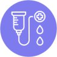

Что такое тройной негативный рак молочной железы? В чем особенности его диагностики? Какие инновационные методы лечения имеются у врачей? Читайте об этом в статье.
Содержание статьи
Что такое меланома Что такое меланоциты и зачем они нужны Почему организм защищается от солнца Что такое меланоциты и зачем они нужны Что такое меланомаРак молочной железы — это группа онкологических заболеваний, развивающихся в молочной железе. Опухоли молочной железы отличаются по внешнему виду, активности, строению опухолевых клеток, способности вырабатывать молекулы-рецепторы. Для установления конкретного вида заболевания врачи проводят исследование клеток новообразования. Они описывают их внешний вид и расположение, определяют количество рецепторов к эстрогену, прогестерону, эпидермальному фактору роста 2-го типа (HER2), чтобы выбрать наиболее эффективное лечение. Опухоль, клетки которой содержат рецепторы к эстрогену и прогестерону, с большой вероятностью уменьшится под действием гормональной терапии, при обнаружении HER2 врачи применят таргетную терапию.
текст
- текст
- текст
- текст
- текст
- текст
- текст
- текст
- текст
- текст
- текст
- текст
- текст
- текст
- текст
- текст
- текст
На долю тройного негативного рака молочной железы приходится 15–25% всех случаев рака молочной железы1. Как правило, для этого подтипа характерна высокая скорость деления клеток, на которую указывает большое значение индекса Ki-67 (показателя активности деления опухолевых клеток), что приводит к высокой активности и быстрому росту1.
Трижды негативный рак молочной железы по своим симптомам и клиническим проявлениям не отличается от других злокачественных опухолей этого органа. В ткани железы появляется плотное образование — узелок, который можно почувствовать через кожу. Над опухолью кожа может втягиваться, образуя ямочку. Возможно изменение формы соска, он как бы проваливается вовнутрь. При распространении заболевания увеличиваются подмышечные лимфатические узлы2. Если вы обнаружили у себя изменения — обратитесь к врачу, не откладывая. Однако внешние признаки возникают при увеличении размера новообразования, поэтому самообследование на заменяет регулярную маммографию, которая может выявить новообразование на более ранних стадиях3.
Клинические проявления и симптомы
Трижды негативный рак молочной железы по своим симптомам и клиническим проявлениям не отличается от других злокачественных опухолей этого органа. В ткани железы появляется плотное образование — узелок, который можно почувствовать через кожу. Над опухолью кожа может втягиваться, образуя ямочку. Возможно изменение формы соска, он как бы проваливается вовнутрь. При распространении заболевания увеличиваются подмышечные лимфатические узлы2. Если вы обнаружили у себя изменения — обратитесь к врачу, не откладывая. Однако внешние признаки возникают при увеличении размера новообразования, поэтому самообследование на заменяет регулярную маммографию, которая может выявить новообразование на более ранних стадиях3.
Диагностические методы и исследования
Инструментальные исследования
Само по себе выявление новообразования при осмотре или на маммографии еще не говорит о том, что это рак. Определить это можно, только изучив образец опухоли, полученный во время биопсии. Исследование проводит врач-патолог.
Само по себе выявление новообразования при осмотре или на маммографии еще не говорит о том, что это рак. Определить это можно, только изучив образец опухоли, полученный во время биопсии. Исследование проводит врач-патолог.
Само по себе выявление новообразования при осмотре или на маммографии еще не говорит о том, что это рак. Определить это можно, только изучив образец опухоли, полученный во время биопсии. Исследование проводит врач-патолог.
Само по себе выявление новообразования при осмотре или на маммографии еще не говорит о том, что это рак. Определить это можно, только изучив образец опухоли, полученный во время биопсии. Исследование проводит врач-патолог.
Люди, заставшие Советский Союз, помнят плакаты с лозунгом: «Солнце, воздух и вода — наши лучшие друзья!» Современная наука не согласна с этим утверждением, по крайней мере в том, что касается солнечного излучения.
Солнце — мощный источник ультрафиолета, который наносит вред ДНК — наследственному материалу клетки. Выделяют три типа ультрафиолетовых волн3:
- УФA-лучи с длиной волны 315–400 нм — наименее энергичная составляющая излучения. Примерно 95% ультрафиолета солнца — лучи типа А4;
- УФB-лучи с длиной волны в диапазоне 280–315 нм — диапазон «средней» энергии, именно они преимущественно и вызывают образование загара;
- УФC-лучи с длиной волны 200–280 нм — наиболее коротковолновая и высокоэнергетическая часть УФ-спектра, однако эти лучи сильнее всего отфильтровываются атмосферой.
Виды операций в лечении ТНРМЖ
При раке молочной железы хирург может выполнить либо органосохраняющую операцию, либо мастэктомию. В первом случае удаляется только часть молочной железы, в которой расположена опухоль. В зависимости от размера новообразования подбирают вариант лечения. Вмешательство минимально при лампэктомии — прицельном удалении опухоли в пределах здоровых тканей. При увеличении размера опухоли операция расширяется. Чтобы не упустить ни одну опухолевую клетку и снизить вероятность возвращения заболевания, хирург убирает участок молочной железы большего размера. В таком случае говорят о сегментэктомии и квадрантэктомии. Преимущество органосохраняющих операций заключается в сохранении собственной молочной железы и естественного вида груди5.
Мастэктомия заключается в удалении всей молочной железы, и, если требуется, прилегающих тканей.
Виды операций в лечении ТНРМЖ

Химиотерапия и ее роль после операции
Послеоперационная химиотерапия применяется при высоком риске рецидива заболевания. В частности, у пациентов, у которых на этапе предоперационной химиотерапии не удалось достичь полного патоморфологического ответа из-за устойчивости некоторых опухолевых клеток к препаратам. Чтобы справиться с ними на послеоперационном этапе, врач снова применяет химиотерапевтические препараты, но уже с другим механизмом действия. Адъювантную терапию обычно начинают в течение 4–6 недель после операции. Затягивать со сроками нельзя. Позже, чем через 3 месяца после операции такое лечение обычно не назначают, поскольку это нецелесообразно.
Радиотерапия и ее влияние на рецидивы и выживаемость
Радиотерапия также входит в состав комплексного лечения трижды негативного рака молочной железы. Врач радиотерапевт с помощью ионизирующего излучения воздействует локально на место, где высока вероятность сохранения опухолевых клеток. После операции облучение бывшего расположения опухоли «добивает» сохранившиеся раковые клетки, что дополнительно уменьшает вероятность рецидива и улучшает прогноз заболевания8.
Радиотерапия и ее влияние на рецидивы и выживаемость
Радиотерапия также входит в состав комплексного лечения трижды негативного рака молочной железы. Врач радиотерапевт с помощью ионизирующего излучения воздействует локально на место, где высока вероятность сохранения опухолевых клеток. После операции облучение бывшего расположения опухоли «добивает» сохранившиеся раковые клетки, что дополнительно уменьшает вероятность рецидива и улучшает прогноз заболевания8.
Клинические исследования и перспективы лечения ТНРМЖ
Иммунотерапия и таргетная терапия подходит не всем пациенткам с трижды негативным раком молочной железы. Для их назначения требуется выявление мутации генов BRCA 1 и 2 и определение повышенного уровня PD-L1. Для многих женщин единственным вариантом лечения остается химиотерапия, применение которой сопровождается большим количеством побочных эффектов. Более того, на поздних стадиях и при рецидивах заболевания ее эффективность ограничена.
Для поиска новых механизмов образования этой опухоли проводятся клинические исследования. Понимание биологии процесса помогает ученым разрабатывать препараты, прерывающие цепь событий и предотвращающие деление опухолевых клеток.
По состоянию на 2023 год в мире проходит около 100 исследований новых терапевтических схем лечения трижды негативного рака молочной железы.
Иммунотерапия и таргетная терапия подходит не всем пациенткам с трижды негативным раком молочной железы. Для их назначения требуется выявление мутации генов BRCA 1 и 2 и определение повышенного уровня PD-L1. Для многих женщин единственным вариантом лечения остается химиотерапия, применение которой сопровождается большим количеством побочных эффектов. Более того, на поздних стадиях и при рецидивах заболевания ее эффективность ограничена.
Для поиска новых механизмов образования этой опухоли проводятся клинические исследования. Понимание биологии процесса помогает ученым разрабатывать препараты, прерывающие цепь событий и предотвращающие деление опухолевых клеток.
Было полезно?
Мы заботимся о том, чтобы наши материалы содержали актуальную информацию, а также оказывали читателям всю необходимую помощь и поддержку. Сообщите, пожалуйста, была ли эта статья полезна для вас.
Список литературы
- 1
- 2
- 3
- 4
- 5